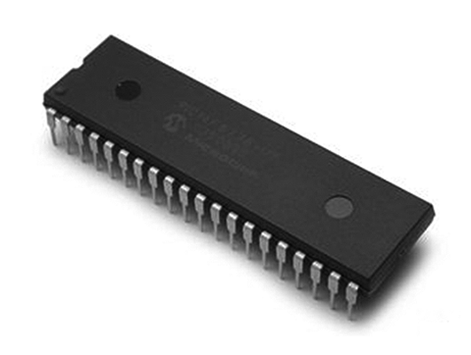
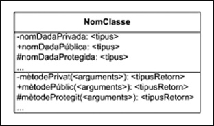
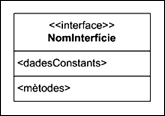

Creació d'aplicacions escalables
Existeixen diferents mecanismes bàsics per garantir l’escalabilitat de les aplicacions. D’una banda, hi ha el principi d’encapsulació i ocultació d’informació, a partir del qual els mòduls de què es compon una aplicació es generen com una capsa negra, on es defineixen les seves funcionalitats però no com les duen a terme internament. Aquesta important estratègia és aplicable a qualsevol tipus de llenguatge, i no està vinculada exclusivament a l’orientació a objectes, si bé ens centrarem en la seva aplicació en aquesta metodologia i en com usar-la en la definició de classes.
D’altra banda, l’orientació a objectes proporciona dos mecanismes exclusius, i especialment potents, per desenvolupar aplicacions fàcilment extensibles: l’herència i el polimorfisme. La seva particularitat principal és que només poden ser implementats amb un llenguatge que suporti orientació a objectes; no es poden implementar mitjançant altres llenguatges. Per aquest motiu, és en aquests mecanismes on es fa especial èmfasi.
Entre els seus avantatges més importants trobem:
- Ofereixen una manera fàcil de minimitzar la duplicació de codi.
- Tenen capacitat d’afegir noves funcionalitats, de manera senzilla, a classes ja definides.
- Es poden definir operacions en què es poden passar com a paràmetre objectes de classes que encara no s’han definit en el moment d’especificar l’operació.
- Aporten noves vies a la idea de poder manipular i organitzar els objectes de manera més semblant al pensament humà.
Aquests mecanismes són d’enorme utilitat quan es desenvolupa programari de certa complexitat, que s’ha de poder ampliar en el futur de manera ràpida i senzilla. De fet, actualment, tant l’herència com el polimorfisme són considerades característiques indispensables en qualsevol llenguatge orientat a objectes.
Encapsulació
Una aplicació generada mitjançant l’orientació a objectes té molt en comú amb una altra que s’ha generat mitjançant un llenguatge clàssic: en darrera instància, tot està format per un conjunt de variables en les quals es desa l’estat del programa i un seguit de blocs de sentències que en componen la lògica. Així és com realment es representen els atributs i les operacions en el programa. L’aspecte diferencial és l’estratègia d’organització del programa, que distribueix aquestes variables i blocs de sentències dins de classes, de manera que sigui molt més entenedora per a la manera de pensar humana i permeti maximitzar la reutilització de codi; dit d’una altra manera, es converteix el programa en una simulació. Ara bé, a fi de generar programari de qualitat, hi ha un principi que cal tenir molt present i aplicar acuradament durant l’etapa de disseny: el principi d’encapsulació. Si bé també cal tenir-lo present en el procés de desenvolupament de programari mitjançant llenguatges clàssics, és especialment beneficiós dins el camp de l’orientació a objectes.
En aplicar l’orientació a objectes, les classes s’han d’especificar de manera que actuïn com a caixes negres. Algú que no ha participat en el seu procés de disseny o de desenvolupament ha de poder usar-les sense que li calgui saber-ne l’estructura interna: com s’emmagatzema l’estat dels objectes (els atributs) o de quina manera s’ha decidit implementar cert mètode. En aquest aspecte, es pot considerar que la manera ideal d’operar d’una classe ha de ser com ho faria un aparell autònom com, per exemple, un caixer automàtic: la persona que el fa servir pot treure’n profit sense haver de saber com funciona internament. El cas és que, donada una interacció possible amb l’aparell, aquest compleix l’ordre de la manera esperada i res més, per molt complex que sigui dur-la a terme internament. Per a qui l’està usant, aquesta complexitat necessària per dur a terme la tasca o accedir al que hi ha a dins del caixer són qüestions irrellevants, sempre que els diners acabin sortint al final del procés.
Un mètode és la implementació, el codi que s’executa, d’una operació.
Quan es defineix una classe, només s’ha de mostrar què poden fer els seus objectes, però no com ho fan, o mitjançant quines dades.
- 
- Un microxip, un exemple clàssic d'encapsulació i ocultació en informàtica.
Els objectius d’aplicar aquest principi són en gran mesura els següents:
- Minimitzar les implicacions de qualsevol modificació posterior a una classe, fent que aquest canvi es propagui el mínim possible dins de tot el programari desenvolupat.
- Permetre aplicar programació defensiva: forçar un major control d’errors, de manera que s’eviti que un objecte estigui en un estat que es pugui considerar invàlid o inconsistent.
El principi d’encapsulació, o d’ocultació d’informació, es basa en l’ocultació de les decisions de disseny, de manera que canvis en una classe afectin al mínim possible el programari ja desenvolupat.
Si bé en les publicacions s’usen els termes encapsulació i ocultació d’informació de manera indistinta, hi ha una certa discòrdia sobre si realment són exactament el mateix concepte. El principal motiu és la relació que hi ha entre els termes: l’encapsulació és un dels principis necessaris per assolir l’ocultació d’informació. Mentre que el segon es pot considerar la fita, el primer és la tècnica emprada.
Interfície d’una classe és el conjunt d’operacions que ofereix.
Un dels mecanismes bàsics per obtenir classes encapsulades correctament és establir una interfície estable en cada classe i no exposar cap camp de dades de manera que sigui directament accessible. Això vol dir que, per defecte, tots els atributs d’una classe cal que siguin sempre privats, a menys que hi hagi un motiu molt bo per no fer-ho. Només ha de ser possible accedir als atributs per mitjà d’operacions accessores, tant per a la seva lectura com per modificar-ne el valor.
Minimització dels efectes de canvis
Suposem el cas en què es vol definir una classe en què s’emmagatzema una data concreta: la classe Data. Una de les decisions que el dissenyador ha de prendre en algun moment en definir-la és com s’emmagatzema la informació associada a un objecte d’aquesta classe, en forma d’atributs d’un tipus concret. Hi ha diverses estratègies per emmagatzemar una data, com per exemple:
- Tres atributs independents de tipus enter: dia, mes i any.
- Un únic atribut
Stringamb un format concret, per exemple: “dia-mes-any”. - El nombre de dies que han passat des d’una data concreta. Tot i que aquesta opció sembla molt rebuscada, el llenguatge Java usa un sistema molt semblant per a la seva classe Date.
Si mantenim de manera estricta el principi d’ocultació d’informació oferint un conjunt d’operacions que ens permetin obtenir la informació necessària a cada moment, aquesta decisió serà irrellevant a l’hora de fer ús dels objectes de la classe Data i cridar operacions. Així, doncs, si es defineix un mètode getAny(): enter, quan s’implementi el mètode associat:
- Si s’ha triat la primera opció, n’hi ha prou de consultar l’atribut en què es guarda l’any.
- Si s’ha triat la segona, cal processar la cadena de text, recuperar l’any i transformar-la en enter.
- Amb la darrera opció, caldrà fer el càlcul de quants anys han passat, controlant els anys de traspàs, i retornar el resultat.
En qualsevol cas, per als objectes que criden el mètode getAny, el resultat és que s’obté l’any representat per aquell objecte de la classe Data, sense haver de preocupar-se de la complexitat real del procés ni de la seva estructura interna.
Un cop presa aquesta decisió, implementada la classe i utilitzada en diferents aplicacions, arriba el dia en què el dissenyador es veu forçat a canviar els tipus dels atributs per algun motiu. Un bon exemple, que va passar en la realitat, va ser l’efecte 2000.
L'efecte 2000
En una gran quantitat de sistemes informàtics, des de feia temps, la informació relativa a l’any, a les dates, s’emmagatzemava només en dues xifres, per tal d’estalviar espai de memòria (per exemple: 17 de maig del 1984, 17/05/84). En el seu moment, aquesta decisió era lògica, ja que la memòria era escassa i cara. Però aquesta decisió va provocar que, en apropar-se l’any 2000, s’haguessin de modificar tots els sistemes, ja que el dia 1 de gener del 2000 no serien capaços de distingir entre aquesta data o l’1 de gener del 1900, amb conseqüències incertes. Si bé s’anunciava un futur catastròfic, afortunadament al final no n’hi va haver per tant (tot i que molts programadors van estar molt entretinguts durant una bona temporada). Aquest esdeveniment es va anomenar l’efecte 2000.
L'efecte 2038
Els sistemes Unix emmagatzemen la data comptant el nombre de segons des de l’1 de gener del 1970. Donat que en aquests sistemes la xifra més alta que es pot representar és un nombre enter de 32 bits, quan el nombre de segons arribés a aquest màxim representable el comptador es desbordaria; això està previst que succeeixi l’any 2038.
Suposem que en la classe Data s’ha fet una elecció en què l’efecte 2000 té implicacions directes (per exemple, la segona opció). Si s’ha aplicat ocultació i només s’hi accedeix mitjançant la crida de mètodes, canviar el contingut de la classe Data és suficient. Caldrà modificar el tipus dels atributs i el codi dels mètodes accessors de manera que, mantenint el valor de retorn de les operacions, ara funcionin amb els nous tipus dels atributs. El canvi serà transparent per al codi de qualsevol programa en què s’usi la classe Data
. Davant la crida del mètode getAny, se segueix obtenint exactament el mateix resultat, un enter amb l’any.
Si no s’ha aplicat ocultació i en el codi de totes les aplicacions s’ha accedit lliurement als atributs de la classe Data, en haver-los declarat públics, els desenvolupadors, a més de canviar els atributs d’aquesta classe, hauran de repassar tot el codi de tots els programes i modificar les línies en què s’accedeix a l’atribut d’acord amb el nou tipus. Això és moltíssima més feina.
Els que hagin decidit emmagatzemar la nova data en només quatre xifres tornaran a trobar el problema l’any 10000.
Mai no podem assumir que l’estructura interna d’una classe no canviarà en el futur.
Aquest cas també s’aplica en operacions, no de consulta, sinó de modificació d’atributs. Per exemple, el dissenyador pot haver decidit especificar una operació setAny(any: enter) per assignar un any a una data, com també haver especificat que la informació es desi en un únic atribut corresponent als dies que han passat des d’una data concreta. En aquest cas, el mètode a implementar haurà de preveure tots els càlculs necessaris en el codi, de manera que el valor final de l’atribut sigui correcte. Novament, la complexitat del procés queda totalment oculta.
Programació defensiva
Una altra de les motivacions per ocultar la informació emmagatzemada dins els objectes és la programació defensiva.
Programar defensivament implica garantir que l’estat d’un objecte sempre serà consistent i els seus atributs tindran assignats valors considerats correctes.
Cal garantir aquesta consistència independentment dels paràmetres amb què es cridin les seves operacions. S’utilitza aquest terme perquè la consistència s’ha de garantir fins i tot en el cas imaginari que les operacions es cridessin usant paràmetres expressament incorrectes amb l’únic objectiu de deixar l’objecte en un estat inconsistent, i no simplement per error involuntari. Tot i que aquest cas no sempre té sentit, sempre cal desenvolupar programari com si es considerés cert.
Aquest objectiu s’assoleix exclusivament en l’àmbit de la implementació, no del disseny, ja que es fa mitjançant el control dels paràmetres en el codi dels mètodes accessors. La seva ubicació aquí és coherent amb el principi d’ocultació d’informació, ja que el format real dels atributs d’un objecte és ocult i, per tant, el format que es considera correcte per a cada atribut només es pot saber internament en la classe. En darrera instància, el codi de cada classe és el responsable final de controlar quins valors es consideren correctes o incorrectes per a cada atribut, i ha de garantir que mai no s’assignarà cap valor incorrecte.
La programació defensiva té molt sentit quan es vol garantir la seguretat d’un sistema.
Programació defensiva de la classe ''Data''
En l’exemple de la classe Data, hi ha un gran nombre de valors que es consideren incorrectes: valors negatius, els números de mes que no estan entre 1 i 12, dies superiors a 30 per a alguns mesos, o superiors a 28, 29 o 31 per a d’altres, etc. Cal evitar que, per cap concepte, s’arribi a propagar cap d’aquests valors als atributs dels objectes de la classe Data, sigui quin sigui el format final amb què el dissenyador ha triat representar una data internament. Per tant, cada mètode accessor ha de contenir codi que faci aquest control abans de modificar definitivament el valor de cap atribut.
Aplicació d'ocultació de dades
Un dels objectius de la programació orientada a objectes és l’encapsulació de dades i de mètodes de manera que els programadors usuaris d’una classe només poden accedir a les dades mitjançant els mètodes que la mateixa classe proporciona.
Ocultació de mètodes
Pot tenir sentit l’ocultació de mètodes? La resposta és afirmativa, ja que en el disseny d’una classe pot interessar desenvolupar un mètode intern per ser cridat en el disseny d’altres mètodes de la classe i no es vol donar a conèixer a la comunitat de programadors que utilitzaran la classe.
Amb l’encapsulació de dades i de mètodes s’aconsegueix:
- Protegir les dades de modificacions impròpies.
- Facilitar el manteniment de la classe, ja que si per algun motiu es creu que cal efectuar alguna reestructuració de dades o de funcionament intern, es podran efectuar els canvis pertinents sense afectar les aplicacions desenvolupades (sempre que no es modifiquin els prototipus dels mètodes existents).
Així, doncs, ens interessa ocultar les dades i, potser, alguns mètodes.
Donada la següent classe Persona, si desenvolupem un programa que instanciï objectes de la classe, no hauríem de tenir accés directe a les dades dni, nom i edat. Però, hi tenim accés?
//Fitxer Persona.java
public class Persona {
public String dni;
public String nom;
public short edat;
// Retorna: 0 si s'ha pogut canviar el dni
// 1 si el nou dni no és correcte - No s'efectua el canvi
public int setDni(String nouDni) {
// Aquí hi podria haver una rutina de verificació del dni
// i actuar en conseqüència. Com que no la incorporem,
// retornem sempre 0
dni = nouDni;
return 0;
}
public void setNom(String nouNom) {
nom = nouNom;
}
// Retorna: 0 si s'ha pogut canviar l'edat
// 1 : Error per passar una edat negativa
// 2 : Error per passar una edat "enorme"
public int setEdat(int novaEdat) {
if (novaEdat<0) return 1;
if (novaEdat>Short.MAX_VALUE) return 2;
edat = (short)novaEdat;
return 0;
}
public String getDni() { return dni; }
public String getNom() { return nom; }
public short getEdat() { return edat; }
public void visualitzar() {
System.out.println("Dni...........:" + dni);
System.out.println("Nom...........:" + nom);
System.out.println("Edat..........:" + edat);
}
public static void main(String args[]) {
Persona p1 = new Persona();
Persona p2 = new Persona();
p1.setDni("00000000");
p1.setNom("Pepe Gotera");
p1.setEdat(33);
System.out.println("Visualització de persona p1:");
p1.visualitzar();
System.out.println("El dni de p1 és " + p1.getDni());
System.out.println("El nom de p1 és " + p1.getNom());
System.out.println("L'edat de p1 és " + p1.getEdat());
System.out.println("Visualització de persona p2:");
p2.visualitzar();
}
}
Per comprovar si es garanteix l’ocultació de dades en aquesta classe, considerem el programa següent en què es creen objectes de la classe Persona dissenyada en l’arxiu Persona.java.
//Fitxer CridaPersona.java
public class CridaPersona{
public static void main(String args[]) {
Persona p = new Persona();
p.dni = "--$%#@--";
p.nom = "";
p.edat = -23;
System.out.println("Visualització de la persona p:");
p.visualitzar();
}
}
En aquest cas estem en un programa extern a la classe Persona i es veu com accedim directament a les dades “dni”, “nom” i “edat” de la persona creada, i podem fer autèntiques animalades. El compilador no es queixa (cal haver compilat també l’arxiu Persona.java en el mateix directori) i l’execució dóna el resultat:
Visualització de la persona p: Dni...........:--$%#@-- Nom...........: Edat..........:-23
Paquets o "packages"
Les classes es poden organitzar en paquets i aquesta possibilitat s’acostuma a utilitzar quan tenim un conjunt de classes relacionades entre elles. Totes les classes no incloses explícitament en cap paquet i que estan situades en un mateix directori es consideren d’un mateix paquet.
Acabem de veure, doncs, que la nostra versió de la classe Persona no oculta les dades i això és perquè en la definició d’aquestes dades no s’ha posat al davant el modificador adequat que controla l’ocultació. És a dir, la definició d’una dada i/o un mètode pot incloure un modificador que indiqui el tipus d’accés que es permet a la dada i/o mètode, segons la sintaxi següent:
[<modificadorAccés>] [<altresModificadors>] <tipusDada> <nomDada>;
[<modificadorAccés>] [<altresModificadors>] <tipusRetorn> <nomMètode> (<llistaArgs>)
{...}
- 
- Notació d'una classe
El modificador d’accés pot prendre quatre valors:
- public, que dóna accés a tothom;
- private, que prohibeix l’accés a tothom menys pels mètodes de la pròpia classe;
- protected, que es comporta com a public per a les classes derivades de la classe i com a private per a la resta de classes;
- sense modificador, que es comporta com a public per a les classes del mateix paquet i com a private per a la resta de classes.
La classe Persona ha usat el modificador public per especificar els seus atributs. Per tant, la classe CridaPersona hi ha tingut accés total.
Notació
A la notació per a una classe s’aprecien dues zones:
- Zona per a les dades.
- Zona per als mètodes.
Notació per als modificadors d’accés als membres:
- Prefix - per als privats.
- Prefix + per als públics.
- Prefix # per als protegits.
Sembla lògic, doncs, fer evolucionar la versió actual de la classe Persona cap a una classe que tingui les dades declarades com a privades i els mètodes com a públics. Fixem-nos que el mètode main per comprovar el funcionament d’una classe sempre ha estat declarat public.
A continuació presentem una versió evolucionada de la classe Persona que inclou els modificadors d’accés adequats: dades a private i mètodes a public.
//Fitxer Persona.java
public class Persona
{
private String dni;
private String nom;
private short edat;
...
Amb aquesta versió de la classe Persona, vegem què succeeix quan intentem compilar la classe CridaPersona que crea una persona i intenta accedir directament a les dades:
CridaPersona.java:11: dni has private access in Persona p.dni = "--$%#@--"; ^ CridaPersona.java:12: nom has private access in Persona p.nom = ""; ^ CridaPersona.java:13: edat has private access in Persona p.edat = -23; ^ 3 errors
Fixem-nos que el compilador ja detecta que no hi ha accés a les dades. Hem aconseguit el nostre objectiu: protegir les dades tot ocultant-les a qui no les ha de veure.
Herència
La paraula taxonomia prové del grec taxis que vol dir divisió i nomos que significa d’acord al que el que està establert, a la llei.
Una eina molt útil per fer aplicacions escalables és l’herència. Aquest concepte està força vinculat a la taxonomia, la ciència de la classificació mitjançant l’organització dels elements en grups segons les seves relacions de similitud. Això és molt útil en el camp de la biologia en la classificació dels éssers vius. Quan s’usa en aquest camp, sol tenir una estructura jeràrquica en funció d’espècies, gèneres, famílies, etc. La figura mostra un exemple senzill d’aquest concepte, sense cap intenció de ser complet.
Crear taxonomies és útil perquè permet definir les característiques d’un conjunt d’elements partint d’una descripció general i, a poc a poc, concretar fins a arribar als elements més concrets. En la figura, es parteix des de l’esquerra, amb el major grau de generalització, i a mesura que ens desplacem cap a la dreta s’arriba a un major grau de concreció. Dins un mateix nivell de la taxonomia, cada conjunt es distingeix dels altres per certes diferències, però tots comparteixen les propietats del nivell anterior. Així, doncs, un gat comú (Felis catus) comparteix tot un conjunt de característiques amb un linx ibèric (Lynx pardinus): és un mamífer placentari, té pupil·les verticals per veure de nit i urpes, etc. Totes aquestes característiques comunes venen donades pel fet que ambdós pertanyen a la família dels felins. Però, tot i així, hi ha certes diferències: la mida, costums d’alimentació, hàbitat, període de gestació, etc. Per aquest motiu els biòlegs han decidit que pertanyen a espècies diferents. El resultat final és que, un cop establertes les característiques d’un felí, ja no cal tornar-les a especificar per als nivells més concrets, es donen per conegudes. Igualment, donat un gat comú i un linx, i independentment de les diferències, es considera que tots dos pertanyen a la família dels felins.

- Un gat és alhora un felí.
Atès que l’orientació a objectes es basa en la descomposició d’un problema en conjunts d’elements d’acord amb les seves propietats i el seu comportament, no és descabellada la idea d’aprofitar aquesta estratègia per obtenir exactament els mateixos beneficis que en la biologia. Concretament, se’n fa ús a l’hora d’especificar classes.
S’anomena herència la capacitat de definir una classe tan sols especificant-ne les diferències respecte a una altra classe prèviament definida. En la resta d’aspectes, es considera que es comporta exactament igual.
Disseny amb herència
L’herència normalment es plasma de manera gràfica establint un esquema tal com es mostra en la figura. Quan s’aplica herència des d’una classe a una altra, es diu que la segona classe, la del nivell inferior, hereta de la primera. En la figura, per exemple, les classes Música i Vídeo hereten de la classe Mèdia. També se sol dir que, quan s’aplica herència, hi ha un cas o una relació de generalització/especialització.
MP3 i Ogg són dos formats diferents per codificar música. Mentre que el primer és propietari, el segon és lliure.

És possible definir diferents nivells d’herència, com també tenir diverses classes que hereten de la mateixa, de manera que es crea una jerarquia de classes. Els nivells superiors dins una jerarquia d’herència solen correspondre a descripcions més generals dels elements, mentre que els nivells inferiors corresponen a elements més concrets o especialitzats.
En l’herència també se sol dir que una superclasse és una classe pare i que una subclasse és una classe filla.
Donada una classe concreta dins la jerarquia, tota classe més general és la seva superclasse, mentre que en el cas d’una classe més concreta, es tracta de la subclasse.
Tant Música com Mèdia són superclasses de les classes MP3 i Ogg. Recíprocament, aquestes dues classes són subclasses tant de Música com de Mèdia. Vídeo només és subclasse de Mèdia.
Crear una jerarquia de classes té dues conseqüències immediates a efectes pràctics, tant en el disseny com en la implementació. Aquests efectes són exactament els mateixos que s’han observat en la taxonomia de felins, però traduïts a classes i objectes:
1) Per una banda, qualsevol propietat o comportament definit en una classe es propaga a totes les seves subclasses. Això significa que qualsevol atribut o operació definida en una superclasse es considerarà que també existeix implícitament en totes les seves subclasses, sense necessitat de tornar-los a especificar en cada una. La propietat inversa no és certa: les operacions especificades en una subclasse no existeixen necessàriament en les superclasses.
Exemple: la classe ''Mèdia''
En la classe Mèdia s’han especificat l’atribut i l’operació accessora associada:
- durada: enter+ getDurada(): enter
Es considera que automàticament també existeixen en les classes Música, MP3 i Ogg, sense que calgui especificar-ho en la llista d’atributs i operacions d’aquestes classes. Per tant, és possible cridar l’operació getDurada sobre l’objecte laMevaCançó: MP3.
La propagació de propietats dins la jerarquia de classes també s’aplica a les relacions entre classes definides en el diagrama estàtic UML. Això és lògic atès que, en darrera instància, aquestes s’implementen com a atributs.
Aquesta propietat de l’herència resulta ideal quan es volen estendre les funcionalitats d’una classe a partir d’una altra que ja està creada. Només caldrà definir la nova classe com a subclasse de la primera i afegir els fets diferencials (nous atributs i operacions). Això permet un cert grau de reaprofitament de feina. Un dels avantatges principals d’aplicar herència per assolir aquesta fita és que, per heretar d’una classe (en el disseny o a la implementació), no cal haver participat en la creació de la superclasse. No cal saber res més que el nom de la classe i quines operacions públiques ofereix. En el cas de la implementació, per heretar d’una classe ni tan sols en cal el codi font.
AAC són els inicials d’advanced audio coding, un format destinat en el seu dia a reemplaçar l’MP3.
Exemple: nous formats de música
Si un dia es crea una nova classe per suportar nous formats de música en el reproductor multimèdia, per exemple la classe AAC, n’hi haurà prou de fer que aquesta nova classe hereti de Música per reaprofitar tota la feina feta tant en la classe Música com en la classe Mèdia. Tots els atributs i operacions de totes dues classes s’hereten.
Quan es genera una jerarquia d’herència, des de zero o partint d’una ja existent, cal estudiar quins atributs i operacions són comuns als diferents conjunts de subclasses i definir-los sempre en la classe més general possible. L’herència ja fa que aquesta definició es propagui a les subclasses. D’acord amb la jerarquia de la figura, la classe en què s’especifiquen els atributs “nom” i “durada” i, implícitament, les seves operacions accessores, és Mèdia, ja que són una propietat que té qualsevol arxiu de mèdia. Seria incorrecte especificar-ho repetidament en totes les classes de la jerarquia. De manera general, si al crear una aplicació orientada a objectes apareixen classes amb moltes de les seves característiques repetides, és senyal que hi manca aplicar una herència per agrupar-les.
L’herència permet fer “factor comú” en especificar classes.
Així, doncs, l’herència també serveix com a mecanisme per evitar la duplicació d’operacions idèntiques i, per extensió, a l’hora d’implementar-les, de codi.
2) D’altra banda, un aspecte molt important i útil que aporta l’herència és la capacitat de disposar d’objectes que pertanyen a diverses classes alhora: objectes amb més d’un tipus. Donat un objecte d’una classe concreta, aquest objecte no solament serà del tipus que marca la seva classe, sinó que també ho serà de totes les seves superclasses.
Donada la jerarquia de classes de la figura:
- Els objectes de la classe
MP3pertanyen a tres classes alhora:MP3,MúsicaiMèdia. - Els objectes de la classe
Vídeopertanyen a dues classes:VídeoiMèdia. - Els objectes de la classe
Mèdiapertanyen a una única classe:Mèdia.
Exemple: la classe Lector
Suposem que es disposa dels següents atribut i operació definits en una classe Lector, que processa arxius de mèdia:
- mediaActual: Mèdia.+ reproduir (m: Mèdia).
Donat un atribut, igual que amb totes les variables en qualsevol llenguatge de programació, orientat a objectes o no, sols és possible assignar-hi valors d’acord amb el tipus especificat. Per tant, a aquest atribut només es pot assignar un objecte de la classe Mèdia. El mecanisme d’herència permet assignar objectes que no són directament instàncies de la classe Mèdia (el tipus definit per l’atribut) i tot i així complir aquesta premissa: és possible assignar objectes que són instància de qualsevol subclasse de Mèdia, ja que es consideren objectes de la seva classe i Música alhora. Per tant, és correcte assignar tant l’objecte unaMedia:Mèdia com unaCanço:Música, unaCançoMp3: MP3, unaCançoOgg:Ogg o unVideo:Vídeo.
Aquest cas és aplicable també a crides de l’operació reproduir. Aquesta operació es pot cridar passant com a paràmetre qualsevol objecte de les classes Mèdia, Música, Vídeo, MP3 i Ogg sense estar infringint cap norma respecte la concordança del tipus en el paràmetre d’entrada.
Modificadors d'accés i herència
Quan els modificadors d’accés defineixen atributs i operacions mantenen la seva validesa estrictament, fins i tot entre classes que hereten una de l’altra. Una superclasse pot continuar (i hauria de continuar) operant com una caixa negra amb vista a les seves subclasses sense cap problema. Aquest fet té una implicació interessant: si un atribut de la superclasse s’ha definit com a privat, la classe filla no podrà accedir-hi directament. Així, doncs, s’arriba a la situació que els objectes de la subclasse contenen els atributs de la superclasse, però no poden gestionar-los directament. La manera correcta és usar els mètodes accessors per fer-ho.
En el cas dels mètodes privats, tot i que també s’hereten, serà impossible cridar-los. Per tant, es tracta d’un altre cas especial, ja que tot i que es considera que la classe té l’operació especificada, no pot cridar-la.
Hi ha un tipus de visibilitat vinculat a les relacions d’herència: un atribut o operació protegit, associat a la paraula clau protected i que s’identifica amb el símbol #. Normalment, els llenguatges de programació interpreten aquesta visibilitat com si es considerés pública per a totes les subclasses i privada per a la resta. Per tant, totes les instàncies de subclasses poden accedir directament a l’atribut o cridar l’operació lliurement, però instàncies de qualsevol altra classe (incloent-hi superclasses), no.
Estrictament parlant, usar visibilitat protegida també va en contra del principi d’encapsulació. L’herència no és excusa per obviar que és molt millor que, per defecte, tots els atributs es defineixin com a privats i es generin les classes com a caixes negres.
Classes abstractes
Si es torna a fer una ullada a les taxonomies d’animals, hom es pot adonar d’una circumstància destacable: donada una classificació total, des del cas més general possible als més concrets de tots, en el món real només hi ha realment els elements de les classificacions més concretes. Així, doncs, hi ha gats perses, però no existeix cap animal que simplement sigui un felí i prou. Tot felí que existeix al món sempre és, en realitat i en darrera instància, algun cas més concret (un linx ibèric, un tigre de bengala, etc.). La majoria dels conjunts definits serveixen com a recull de propietats comunes, però no existeix cap element que pertanyi únicament i exclusivament als conjunts més generals.
Aquesta circumstància especial també es pot aplicar quan s’usa l’herència dins l’orientació a objectes: és possible definir classes que especifiquin un conjunt d’atributs i d’operacions, però de les quals no existeixin objectes. És a dir, classes que no es poden instanciar. Pel que fa a la implementació, qualsevol intent d’instanciar-les provocarà un error. Aquestes classes s’anomenen classes abstractes i el seu objectiu és facilitar la creació de jerarquies d’herència útils, que representin idees de les quals, si bé es pot definir un conjunt de propietats, no existeixen elements com a tals.
Una classe abstracta no es pot instanciar, ja que representa un concepte abstracte. Està pensada per operar com a superclasse d’altres classes en qualsevol nivell dins una jerarquia.
Exemple: música i dades en format ''Ogg''
En una aplicació de reproducció de multimèdia que suporti els formats d’àudio MP3 i Ogg, tota la música que gestiona sempre serà o bé un conjunt de dades en format MP3 o en format Ogg. És a dir, o bé un objecte de la classe MP3 o un de la classe Ogg, però mai gestionarà objectes de la classe Música i prou. Per tant, Música es pot especificar com una classe abstracta. Fins i tot si se suporten nous formats de dades, els objectes sempre seran d’un format concret, mai simplement “de música”.
Una classe abstracta es representa gràficament posant el seu nom en cursiva, d’acord amb la representació de la figura.

L’existència de les classes abstractes en els nivells més generals d’una jerarquia no s’ha d’interpretar com que qualsevol superclasse ha de ser forçosament abstracta. Només ho serà quan es vulgui representar un concepte general, amb el qual es poden classificar altres elements, però que realment no existeix com a tal. En molts casos, al contrari que en una taxonomia, sí que té sentit que existeixin superclasses no abstractes.
DRM són les inicials de digital rights management (gestió de drets digitals).
El format Fairplay de la companyia informàtica Apple és una versió amb DRM del format AAC.
Exemple: extensió de la classe ''Ogg''
Suposem que a l’aplicació de reproducció de música es vol afegir la funcionalitat d’interpretar un format nou de dades basat en l’Ogg, però amb sistemes de protecció de drets d’autor (DRM) incorporat. Un fitxer de música protegit per sistemes DRM està xifrat, de manera que un cop carregat dins un reproductor ja no és possible traspassar-lo a un altre mitjà de cap manera. Aquest nou format s’anomenarà OggProtegit i caldrà representar-lo amb una nova classe.
En aquest cas, el dissenyador pot decidir que aquest nou format no és res més que el format Ogg, ja que disposa exactament de les mateixes funcionalitats, però amb certes propietats addicionals: les dades estan xifrades i tenen una clau que les protegeix, calen operacions per xifrar/desxifrar les dades, etc. Per tant, és un cas ideal per aplicar herència, de manera que es reaprofita la feina feta a la classe Ogg. De fet, per fer-ho ni tan sols és necessari que el dissenyador hagi estat el creador original de la classe Ogg.
En la figura es mostra com quedaria la nova jerarquia de classes per a aquest cas concret. Dins el programa podrien existir instàncies tant de la classe Ogg, que representarien peces musicals no protegides amb DRM, com de la classe OggProtegit, que representarien peces de música protegides. El que mai no hi ha són instàncies de les classes Música o Mèdia, ja que es tracta de classes abstractes.

Atès que una classe abstracta no es pot instanciar, mai no hi haurà objectes d’aquesta classe sobre els quals cridar operacions. Tot i així, especificar-hi operacions no és un fet il·lògic, ja que cal recordar que totes són heretades per les respectives subclasses i, si aquestes no són abstractes, es poden cridar. Aquest és, en definitiva, l’objectiu final de definir una classe abstracta.
Pèrdua d'identitat
En el moment en què un objecte pertany a més d’una classe alhora apareix la problemàtica anomenada pèrdua d’identitat d’un objecte. Aquesta està especialment vinculada a la implementació i, en conseqüència, és el programador qui haurà de tenir-la en compte. Per tant, es deixa momentàniament la visió del dissenyador i s’entra en la del programador (tot i que un dissenyador també ha de saber que existeix).
Atès que sota una jerarquia de classes un objecte té diversos tipus, és possible assignar-lo a qualsevol variable “x” d’algun dels tipus als qual pertany: la seva classe directament o qualsevol de les seves superclasses. Si x està definida com de la mateixa classe que l’objecte, no passa res; però en el moment en què “x” ha estat definida com d’una de les superclasses de l’objecte, el que passa és que, a nivell de codi, aquest objecte passa a comportar-se exactament com un objecte de tipus igual al de la variable. Tot i que internament l’objecte no ha variat, s’ha perdut la capacitat d’operar-hi amb totes les seves funcionalitats originals.
La implementació d’una operació s’anomena un mètode.
Aquesta particularitat s’entén molt millor amb un exemple concret:
Exemple: ''Mèdia'' i les seves subclasses
Suposem que existeix una classe Lector, que s’encarrega de processar arxius de mèdia, on s’ha especificat l’operació següent:
+reproduir (m: Mèdia)
Respecte a aquesta operació, es compleix el següent:
a) Donada aquesta definició, en implementar-la, dins el codi del mètode associat hi haurà una variable m, que serà de la classe Mèdia. Dins el codi es podrà manipular l’objecte passat com a paràmetre per mitjà d’aquesta variable (bàsicament, cridar operacions). Això no és específic de l’orientació a objectes, passa en tots els llenguatges de programació.
b) Atès que m està definida com de la classe Mèdia, a través de m només es poden cridar operacions disponibles en aquesta classe (especificades directament o heretades de les seves superclasses).
c) Per les propietats de multiplicitat de tipus del mecanisme d’herència, a aquest mètode se li pot passar com a paràmetre un objecte de les classes Música, Vídeo, MP3 o Ogg (o OggProtegit). En fer-ho, aquest objecte queda assignat a la variable “m”.
Arribat a aquest punt, pels apartats b) i c) es pot veure que hi ha una circumstància especial: tot i que en la variable “m” hi ha assignat un objecte de tipus Música, Vídeo, MP3 o Ogg, només es poden cridar les operacions disponibles per a la classe Mèdia. Les operacions que només existeixen en altres classes es tornen inaccessibles, tot i que els objectes internament no han canviat de classe.
L’objecte passat a través del paràmetre “m” ha “perdut la seva identitat”.
La pèrdua d’identitat dels objectes és una conclusió lògica, ja que quan es disposa d’una variable “x” definida com d’una classe concreta és impossible saber a priori la classe real de l’objecte assignat quan hi ha herència implicada. Per tant, no ha de ser possible cridar operacions de subclasses, en no poder garantir el tipus de l’objecte realment assignat. Només es pot garantir que, sigui quin sigui l’objecte, almenys serà de la classe exacta amb què s’ha definit la variable “x”. Aquesta suposició ha de ser certa per força, ja que en cas contrari hi hauria una assignació errònia de tipus i el compilador hauria generat un error. Mai no s’arribaria a poder executar el programa sense complir aquesta condició.
De totes maneres, la majoria dels llenguatges orientats a objectes ofereixen mecanismes per esbrinar la classe original dels objectes assignats a una variable.
Herència múltiple
De la mateixa manera que una classe pot tenir diverses subclasses a un nivell immediatament inferior dins una jerarquia, res no impedeix el cas exactament invers. Aquest cas s’anomena herència múltiple, ja que una classe hereta directament de múltiples superclasses.
L’herència múltiple descriu la situació en què una classe hereta directament de més d’una classe.
En un cas com aquest, totes les propietats de l’herència es mantenen: les successives subclasses hereten les propietats de totes les seves superclasses, independentment que sigui per una única via totalment lineal o per diversos camins.
Exemple: el karaoke
Afegint noves funcionalitats a un reproductor d’arxius multimèdia, el dissenyador decideix la possibilitat d’interpretar dades que codifiquin una cançó de karaoke. Com a decisió de disseny, considera que aquest element és una unió de les propietats d’un vídeo (una pista d’imatges en moviment, un director, un idioma, etc.) i les propietats d’una peça musical (d’un cert cantant i estil, amb una pista d’àudio independent, etc.). A més a més, té les seves característiques exclusives que el fan diferent d’aquestes dues classes ja definides (unes lletres sincronitzades en la pista d’àudio).
Per tant, té sentit aplicar herència múltiple per reaprofitar tota la feina ja feta en les classes Música i Vídeo, tal com es mostra en la figura. D’acord amb aquesta figura, les instàncies de la classe Karaoke tenen tots els atributs definits en cadascuna de les quatre classes.

Definició de subclasses
En el llenguatge Java, la definició de subclasses s’efectua amb la paraula reservada extends en la declaració de la classe, seguint la sintaxi següent:
[final] [public] class <NomClasse> extends <NomClasseBase>
{
<CosDeLaClasse>
}
De manera automàtica, tots els membres (dades i mètodes) que té la classe base també resideixen en les subclasses, amb excepció del(s) constructor(s), el(s) qual(s), en cas de ser necessari(s), s’haura(n) de dissenyar en les classes derivades.
Només hi ha dues maneres perquè una classe tingui constructor(s): que s’hi defineixi(n) o que, per manca de definició, la classe incorpori el constructor per defecte que proporciona el llenguatge Java.
La definició d’una subclasse ha d’incloure les dades, els iniciadors i els mètodes adequats a l’especialització de subclasse respecte a la classe base i s’afegeixen a les dades i mètodes heretats de la classe base.
En la definició de les dades i els mètodes d’una subclasse cal aplicar els modificadors d’accés (private, public, protected o inexistent) que corresponguin.
Recordem que el codi incorporat en una subclasse (iniciadors i mètodes) té accés a tots els membres public i protected de la classe base i, si ambdues classes estan en el mateix paquet, també tindrà accés a tots els membres que no incorporen cap modificador d’accés.
Indepedentment que, al generar una classe, s’usi la sentència extends per incloure-la dins una jerarquia d’herència, totes les classes del Java sempre hereten d’una classe especial, inclosa a les llibreries principals de Java. Java ho fa automàticament. Es tracta de la classe Object. Aquesta és la superclasse més general de qualsevol classe al Java.
Inicialització de subclasses
Els passos que segueix la màquina virtual en la construcció d’un objecte amb l’execució de l’operador new són els següents:
- Reserva memòria per desar el nou objecte i totes les seves dades són inicialitzades amb valor zero pels tipus enters, reals i caràcter, amb valor
falsepel tipus booleà, i amb valornullper les variables referència. - S’executen les inicialitzacions explícites.
- S’executen els iniciadors (blocs de codi sense nom) que existeixin dins la classe seguint l’ordre d’aparició dins la classe.
- S’executa el constructor indicat en la construcció de l’objecte amb l’operador
new.
Com incideix l’herència en aquest procés quan es crea un objecte d’una classe derivada? El model de seguretat de Java obliga a executar les tres darreres fases en cada classe implicada, seguint l’ordre que marca la jerarquia de classes i començant per la classe de dalt. És a dir, en una situació en què la classe C deriva de la classe B, i aquesta de la classe A, en la construcció d’un objecte de la classe C, primer es reserva memòria per a totes les dades (fase 1) i després s’executen les fases 2-3-4 per la part de l’objecte provinent de l’herència de la classe A, posteriorment les fases 2-3-4 per la part de l’objecte provinent de l’herència de la classe B, i finalment les fases 2-3-4 per la part de l’objecte provinent de les dades declarades en la classe C.
En dissenyar el constructor d’una classe derivada, apareix el problema de com podem indicar quin dels constructors de la classe base s’ha d’executar i amb quins paràmetres.
El llenguatge Java proporciona la paraula reservada super a utilitzar com a nom de mètode per cridar un constructor de la classe base, seguint la sintaxi:
super(<llistaParàmetres>)
La utilització de la paraula reservada super com a mètode per cridar un constructor de la classe base en el disseny d’un constructor en la classe derivada només es pot efectuar en la primera sentència del nou constructor.
Si en el disseny del constructor de la classe derivada, enlloc d’efectuar una crida a super(…), s’efectua una crida a this(…), Java traspassa tota la responsabilitat de construcció al constructor cridat amb la crida this(…), el qual pot contenir una altra crida this(…) o una crida super (…) o cap de les dues.
Si en el disseny d’un constructor no s’explicita cap crida super(…) ni cap crida this(…), Java crida implícitament el constructor per defecte de la classe base (constructor sense arguments) i, si no existeix, el compilador genera un error.
Disseny de la classe Alumne derivada de la classe Persona
Es vol dissenyar la classe Alumne com una especificació de la classe Persona afegint-hi el concepte corresponent al nivell d’estudis que cursa l’estudiant, el qual ha de permetre la gestió dels valors següents: B per a batxillerat, M per als cicles formatius de grau mitjà, S per als cicles formatius de grau superior, i ? per al cas en què el nivell d’estudis sigui desconegut. A continuació, proposem un possible disseny, que incorpora molts constructors per exemplificar la Persona utilització de les crides super(…) i this(…). Així mateix, s’ha cregut oportú fer evolucionar la darrera versió de la classe Persona cap a una classe que tingui les dades declarades com a protected, de manera que la classe Alumne hi té accés directe i en el disseny no ens veiem obligats a utilitzar les funcions accessores (getter i setter).
Com es veu, aquesta classe Alumne conté un munt de constructors. La quantitat de constructors possiblement és excessiva i n’hi ha d’innecessaris, però s’han incorporat per exemplificar la utilització de les crides super(…) i this(…), i el mètode main() que inclou la classe Alumne efectua la creació de sis objectes de la classe per comprovar el funcionament de tots els constructors dissenyats. Si executem aquesta classe passa això:
Dni: null - Nom: null - Edat: 0 - Nivell: ??? Dni: 00000000 - Nom: Pepe Gotera - Edat: 33 - Nivell: Batxillerat Dni: 00000000 - Nom: Pepe Gotera - Edat: 33 - Nivell: ??? Dni: 00000000 - Nom: Pepe Gotera - Edat: 33 - Nivell: Batxillerat Dni: 00000000 - Nom: Pepe Gotera - Edat: 33 - Nivell: ??? Dni: 00000000 - Nom: Pepe Gotera - Edat: 33 - Nivell: Batxillerat
Polimorfisme
Com s’ha pogut veure, la idea darrera del mecanisme d’herència és poder definir fàcilment noves classes a partir de la suposició que un seguit de propietats comunes, especificades en una superclasse, es propaguen automàticament a tot el conjunt de les subclasses. A partir d’aquest punt, en la nova classe només cal definir-ne els trets diferencials que la concreten.
Fins aquest moment, s’ha assumit que aquests trets diferencials són incrementals: s’especifiquen nous atributs o noves operacions en la classe, que se sumen als heretats. Però, què passa si la diferenciació que es vol fer és modificar el comportament d’una operació ja prèviament definida en una superclasse perquè es comporti de manera diferent? En aquesta situació és quan entra en joc el mecanisme del polimorfisme.
El mot polimorfisme prové del grec poly, que significa ‚moltes’, i morfos que significa ‚formes’. Per tant, significa “moltes formes”.
El polimorfisme consisteix en la possibilitat d’aplicar una mateixa operació a objectes de diferents classes, però cridant una implementació diferent segons la classe a la qual pertanyi l’objecte sobre el qual es crida.
Els felins i els polimorfisme
Un exemple del concepte de polimorfisme de caràcter molt general és el següent. Si es pren la taxonomia dels felins, tots tenen la capacitat d’emetre sons amb la boca; tots comparteixen aquest comportament. Tot i així, el resultat d’aquesta propietat és diferent segons quin felí concret l’executa: els gats miolen i les panteres o els lleons rugeixen. El motiu és que es usen un os especial (l’hioide) que les panteres i els lleons tenen en forma de cartílag. No és una simple qüestió de to o volum.Com emeten l’efecte sonor és diferent. Per tant, la capacitat d’emetre sons dels felins és polimòrfica: es fa de maneres diferents segons a quin tipus pertany l’individu que l’executa.
Sobreescriptura d'operacions
El primer pas per veure com s’aplica aquest mecanisme dins una jerarquia de classes és entendre el concepte de sobreescriptura d’operacions (override, en el terme original anglès).
Sobreescriure una operació vol dir tornar-la a definir en una subclasse, de manera que el mètode associat i, per tant, el codi que s’executa, tingui un comportament diferent al de la superclasse.
Atès que s’està parlant de mètodes, els efectes del polimorfisme es veuen reflectits exclusivament en la implementació. De totes maneres, en el disseny cal indicar que una operació s’ha sobreescrit. Això es fa tornant-la a especificar en les subclasses, exactament igual, tot i ja existir en una superclasse. Un cop una operació ha estat sobreescrita, les subclasses successives, a mesura que es descendeix per la jerarquia, hereten la darrera versió, a menys que elles també decideixin sobreescriure-la. No hi ha límit al nombre de vegades que una operació pot ser sobreescrita dins una jerarquia de classes.
Classes abstractes
Mai no es donarà el cas que es cridi una operació sobre un objecte de la classe Música, ja que és abstracta i no es pot instanciar.
Exemple: la jerarquia de formats de música
Per exemple, segons la classe Mèdia a la figura, l’operació obtéDades, s’ha redefinit en la classe Ogg. Aquest exemple té sentit, ja que segons el format de les dades a tractar, aquestes s’han de processar de diferent manera per tal d’extreure un bloc d’una durada concreta. Així, doncs, el mètode que realment s’executa quan es crida aquesta operació sobre un objecte de la classe Ogg és diferent del que s’ha definit en la classe Mèdia. La classe Música conserva l’especificació i el mètode de Mèdia, heretats. En la classe OggProtegit s’ha tornat a redefinir i, per tant, el mètode associat és novament diferent.

Mitjançant la redefinició, és possible usar herència sense estar forçats a usar tot el comportament heretat de les superclasses tal com s’ha especificat en aquestes. És possible mantenir només una part, indicant quines són les diferències respecte al comportament inicial.
Operacions polimòrfiques
Quan sobre un objecte donat es crida una operació que la seva classe ha sobreescrit, el mètode que s’executa sempre és el definit en la classe a què pertany l’objecte, independentment del tipus de la variable on estigui contingut. Aquest comportament és el que es coneix com a polimorfisme dins l’orientació a objectes.
La propietat polimòrfica de les operacions és especialment rellevant quan un objecte ha perdut la identitat: ha estat assignat a una variable definida amb el tipus d’una superclasse, de manera que només és possible cridar operacions especificades en aquesta superclasse. Tot i aquesta circumstància, quan es crida una operació polimòrfica, el codi que s’acaba executant és el relatiu al tipus real de l’objecte, no el de la superclasse.
Exemple: el lector de formats de música
En la classe Lector, encarregada de processar arxius de mèdia, s’ha especificat l’operació següent:
+ reproduir (m: Mèdia)
Independentment del tipus d’objecte que es passi com a paràmetre, aquest queda emmagatzemat en una variable de tipus Mèdia (la variable m). Pel fenomen de la pèrdua d’identitat, només és possible cridar sobre aquesta variable operacions especificades en la classe Mèdia independentment del tipus real de l’objecte, però atès que l’operació obtéDades està especificada en la classe Mèdia, és possible cridar-la. Quan això es fa, succeeix el següent, prenent com a referència la figura:
Si l’objecte emmagatzemat en m és de tipus Ogg, quan es cridi obtéDades s’executarà Mètode2.
Si l’objecte emmagatzemat en m és de tipus OggProtegit, quan es cridi obtéDades, s’executarà Mètode3.
En cap cas s’executa Mètode1, tot i que m està definida de tipus Mèdia en l’operació. Perquè s’executés el codi de Mètode1 caldria passar un objecte o bé de tipus Mèdia, bé de tipus Música (en heretar el mètode, ja que no el sobreescriu), però en aquest exemple concret mai no serà possible, ja que són classes abstractes i no es poden instanciar.
Així, doncs, tot i que l’objecte està emmagatzemat en una variable de tipus Mèdia i l’operació que s’ha cridat és una d’especificada en aquesta classe, mitjançant polimorfisme, el mètode que realment s’executa és l’associat al tipus real de l’objecte emmagatzemat.
Així, doncs, el mecanisme de polimorfisme es fonamenta en el fet que, donada una mateixa operació especificada a diferents classes, tot i no saber el tipus real d’un objecte sobre la qual es crida (a causa de la pèrdua d’identitat) fa que s’executi el mètode.
És interessant saber que en les publicacions també es considera polimorfisme la propietat dels objectes de poder ser usats en operacions en què el tipus dels paràmetres pertany a alguna de les seves superclasses: la capacitat que un objecte tingui més d’un tipus i, per tant, “moltes formes”. Es considera una mena especial de polimorfisme, anomenada polimorfisme paramètric. En contraposició, el cas vinculat a la crida d’operacions es pot anomenar polimorfisme ad hoc. Tot i així, quan es parla simplement de polimorfisme, sense especificar res més, normalment es fa referència a polimorfisme ad hoc.
Operacions abstractes
Al implementar mètodes polimòrfics donada una jerarquia d’herència, pot donar-se una circumstància un xic estranya. Suposem que ha arribat el moment d’implementar el mètode associat a l’operació obtéDades de la classe Música. Què hauria de fer el seu codi? En principi, processar les dades depèn del format final de la música, de manera que aquesta és una pregunta que no té resposta quan es parla de música com a concepte general. Només és possible respondre-la per a les subclasses que indiquen un format concret de les dades: Ogg, OggProtegit, MP3, etc. En casos com aquest és possible especificar una operació com a abstracta.
Llenguatges orientats a objectes
Cada llenguatge orientat a objectes té la seva sintaxi per indicar que un mètode correspon a una operació abstracta, i, per tant, no s’ha de codificar.
En especificar una operació com a abstracta, s’indica que no té cap mètode associat, és a dir, que a l’hora d’implementar-la no es codifica. El codi a executar s’obtindrà a partir de la sobreescriptura duta a terme per alguna de les seves subclasses.
Una operació abstracta s’especifica escrivint-la en cursiva:
+obtéDades(inici: enter, segons: enter): byte[]
Tota classe que conté alguna operació abstracta s’ha d’especificar com a classe abstracta. Atès que no és possible instanciar objectes d’una classe abstracta, s’impedeix que es doni el cas que una operació sense cap mètode associat es pugui cridar.
Error en la programació
Si no es sobreescriuen totes les operacions abstractes heretades, el compilador del llenguatge de programació sempre retorna un error.
En el moment d’especificar una subclasse d’una classe amb operacions abstractes, hi ha dues opcions: o bé se sobreescriuen totes les operacions abstractes heretades, o bé només es fa per a una part d’elles (o per a cap). En el darrer cas, atès que es considera que conté les operacions abstractes heretades, s’ha d’especificar aquesta classe també com a abstracta. Un cop una operació abstracta s’ha sobreescrit amb una versió no abstracta dins la jerarquia de classes, les subclasses successives ja no estan obligades a sobreescriure-la.
Mai no es pot donar el cas que sigui possible instanciar una classe que no té un mètode associat per a cadascuna de les seves operacions.
Polimorfisme i herència múltiple
Tot i que l’herència múltiple pot servir per multiplicar la capacitat d’estendre codi i reaprofitar feina, hi ha un problema greu en usar-la quan es permeten mètodes polimòrfics: el problema del diamant. Aquest problema consisteix en la incapacitat de determinar quin mètode cal executar realment quan hi ha duplicitat de noms en una operació redefinida dins una jerarquia de classes.
El problema del diamant
L’origen del nom del problema del diamant prové del fet que el conjunt de línies que representen les relacions d’herència múltiple en notació UML formen la figura d’un rombe.
En la figura es pot apreciar aquesta problemàtica. Tant en la classe Música com en la classe Vídeo l’operació vistaPrèvia especificada originalment en Mèdia ha esta sobreescrita. Per a cada cas el mètode associat és diferent, ja que cal fer una acció diferent per generar la imatge resultant (per exemple, la informació sobreimpresa depèn dels atributs de cadascú). Per herència, és possible cridar aquesta operació sobre els objectes de la classe Karaoke. El problema és que, en aquesta situació, resulta impossible decidir quin dels dos mètodes cal executar realment.
Per implementar herència múltiple en Java s’utilitza el que s’anomenen interfaces.
En conseqüència, cal tenir molt present aquesta problemàtica quan s’utilitza l’herència múltiple. Una manera senzilla de resoldre-la és sobreescriure novament l’operació conflictiva en la subclasse en què dóna problemes (Karaoke, a la figura), de manera que aquesta estigui associada a un tercer mètode diferent. Tot i existir aquesta solució, no tots els llenguatges orientats a objectes suporten herència múltiple directament, cosa que pot comportar bastants problemes a l’hora de fer la implementació. Per exemple, si bé C++ la suporta, fer-ho pot arribar a tenir un cert grau de complexitat. Altres llenguatges, com el Java, directament no la suporten, i ofereixen mecanismes alternatius per obtenir una funcionalitat semblant (si bé no igual). Sempre val la pena valorar si realment la solució creada només es pot fer mitjançant herència múltiple.
Aplicacions del polimorfisme
Un cop s’ha presentat la manera d’utilitzar el concepte de polimorfisme, val la pena veure amb un exemple concret com la seva aplicació correcta aporta una gran escalabilitat a un sistema, a la vegada que permet seguir fàcilment els principis de cohesió i d’ocultació d’informació.
Suposem el cas d’un reproductor multimèdia, amb una classe Lector que processa arxius de mèdia de diferents formats. Si, sense necessitat d’entrar a nivell de codi, es reflexiona sobre l’operació reproduir de la classe Lector, bàsicament el que fa és anar obtenint dades des de la classe Mèdia mitjançant l’operació obtéDades en un format que és capaç d’entendre. Aquestes dades les va recuperant a poc a poc en blocs d’una durada concreta i les va enviant als altaveus.
Suposem que es vol donar suport progressivament a diferents formats de mèdia. De fet, no solament de música, sinó també de vídeo. Atès que cada format de dades és diferent, l’operació obtéDades ha de fer tasques diferents segons quines dades està processant. Per tant, en darrera instància, el mètode associat serà un enorme bloc condicional. Cada cop que es vulgui suportar un nou format, caldrà tenir el codi font de la classe Mèdia i afegir una nova condició al codi. El resultat és:
- Poca cohesió, ja que hi ha una classe que fa moltes coses molt diferents (gestiona molts formats de dades diferents).
- Cal tenir el codi font per afegir funcionalitats.
Si s’aplica herència i polimorfisme, es pot crear una aplicació més escalable. En aquest cas, quan es vulgui suportar un nou format de dades, n’hi ha prou de generar una nova classe que hereti de Música. Atès que la nova classe hereta de Mèdia, els seus objectes també són d’aquest tipus i, per tant, la nova classe pot ser passada com a paràmetre al mètode reproduir de Lector. Aquesta nova classe sobreescriurà l’operació obtéDades, i assignarà un mètode que tractarà les dades segons el nou format. Atès que obtéDades s’ha especificat com a operació abstracta en Música, es garanteix que la nova classe l’haurà de sobreescriure forçosa- ment si vol ser instanciada. Per tant, el codi associat a reproduir pot garantir que sempre existeix un mètode associat a obtéDades per a qualsevol instància d’una subclasse de Mèdia. El resultat és:
- Un gran manteniment dels principis de cohesió i d’ocultació d’informació. Cada classe vinculada a un format de música gestiona únicament i exclusivament el seu format de música sense haver de conèixer res de la resta.
- Si es vol donar suport a un nou format, es genera una nova classe, però no cal modificar en absolut cap de les classes ja existents. Això vol dir que ni tan sols cal el codi font de totes les parts ja programades per afegir funcionalitats al programa.
Aquest darrer punt és especialment important, ja que s’està assolint una operació (reproduir) que pot ser codificada de manera que funcioni fins i tot amb classes que encara no s’han generat, ja que ni tan sols han estat ideades. Aquesta és la potència del polimorfisme: d’una banda, les operacions abstractes permeten garantir que, donada una classe, totes les seves subclasses també la tindran sempre. D’altra banda, la multiplicitat de tipus de l’herència permet processar instàncies de classes concretes (Ogg, MP3) a partir de paràmetres definits com de classes generals (Mèdia).
Exemples de sobreescriptura de mètodes
En el llenguatge Java, per tal d’aplicar sobreescriptura d’algun mètode a una subclasse cal recordar les següents regles, que cal tenir en compte:
- El nom i la llista i ordre dels arguments han de ser iguals al del mètode de la classe base que es vol sobreescriure.
- El tipus de retorn de tots dos mètodes ha de ser igual.
- El mètode de la classe derivada no pot ser menys accessible que el de la classe pare.
- El mètode de la classe derivada no pot provocar més excepcions que el mètode del pare.
Polimorfisme de dades
Quan es pot accedir a un objecte d’una classe amb una variable de referència d’una classe situada per damunt de segons la jerarquia de classes, es diu que les variables de referència són polimòrfiques.
Com a resultat, la versió heretada d’un mètode sobreescrit desapareix en la classe derivada, però no desapareixen els mètodes heretats que eren sobrecàrregues del mètode sobreescrit. Respecte a l’accés als mètodes, hem de tenir en compte també que:
- Si dins una classe cal accedir a la versió de la superclasse per un mètode sobreescrit, disposem de la paraula reservada
superamb la sintaxi:super.nomMètode(<paràmetres>). - En el llenguatge Java, els mètodes són polimòrfics. Sobre un objecte d’una classe
Zal qual s’accedeix amb una variable de referència d’una classeXsituada per damunt deZsegons la jerarquia de classes, es pot cridar qualsevol mètode dels definits en la classeX(a la qual pertany la variable de referència) però s’executarà la versió del mètode existent en la classeZ(a la qual pertany l’objecte).
És a dir, quin mètode s’executa en les quatre darreres línies del fragment de codi següent?
És clar que en la instrucció (1) s’executarà la versió de met1() de la classe X, ja que tant la variable de referència “ox” com l’objecte són de la classe X. En la instrucció (2) s’executarà la versió de met(1) de la classe Z, ja que preval la classe a la qual pertany l’objecte per damunt de la classe a la qual pertany la variable “oz” emprada per fer referència a l’objecte. Les instruccions (3) i (4) són errònies i el compilador no les accepta perquè, en la classe a què pertanyen les variables de referència “ox” i “oz”, no existeix cap mètode anomenat met2(). Si es vol aplicar el mètode met2() de la classe Z a l’objecte apuntat per “oz”, cal aplicar una conversió cast de la variable “oz” cap a la classe Z tot escrivint:
((Z)oz).met2();
Per veure millor com funciona la sobreescriptura, el millor és estudiar alguns exemples concrets,. Primer veiem un exemple general. Tot seguit , és interessant conèixer quatre mètodes de la classe Object (heretats en totes les classes del Java) per als quals en pot ser necessària o convenient la sobreescriptura: finalize(), equals() i toString().
Exemple general de sobreescriptura de dades i de mètodes
El programa següent declara tres classes: A, B derivada d‘A i C derivada de B. La classe A conté la dada “d” i el mètode xxx(), que són sobreescrits en les classes B i C. La classe A també conté el mètode xxx(int x), que no és sobreescrit en cap classe.
En el mètode main() de la classe C declarem un objecte per a cadascuna de les classes A, B i C, apuntat cada un per variables de la classe A.
El mètode visibilitat() de la classe C exemplifica com es pot utilitzar la paraula super per accedir a una dada heretada sobreescrita. La seva execució (1) ens ho demostra.
En cridar (2) el mètode xxx() per a l’objecte de la classe A apuntat per “oa” s’executa el mètode xxx() de la classe A.
En cridar (3) el mètode xxx() per a l’objecte de la classe B apuntat per “ob” s’executa el mètode xxx() de la classe B el qual, al seu torn, mitjançant la paraula super, crida el mètode xxx() de la classe A.
En cridar (4) el mètode xxx() per a l’objecte de la classe C apuntat per “oc” s’executa el mètode xxx() de la classe C el qual, al seu torn, mitjançant paraula super, crida el mètode xxx() de la classe B, que mitjançant la paraula super, crida el mètode xxx() de la classe A.
Les crides (5), (6) i (7) del mètode xxx(int x) executen, en qualsevol cas, el mètode xxx(int x) de la classe A, heretat en les classes B i C.
Per demostrar totes aquestes afirmacions només cal compilar i executar el fitxer i observar els missatges que es visualitzen:
Des del mètode "visibilitat" en C: d en C = 30 d en B = 20 Crides al mètode xxx() existent a les tres classes: d en A = 10 d en B = 20 d en A = 10 d en C = 30 d en B = 20 d en A = 10 Crides al mètode xxx(int x) existent a les tres classes: Sóc xxx d'A aplicat sobre un objecte de la classe A Sóc xxx d'A aplicat sobre un objecte de la classe B Sóc xxx d'A aplicat sobre un objecte de la classe C
Sobreescriptura del mètode finalize()
El mètode finalize(), definit en la classe Object i, per tant, existent per herència en totes les classes, és cridat de manera automàtica pel recuperador de memòria just abans de destruir un objecte i cal sobreescriure’l en les classes en què pertoqui efectuar alguna actuació abans de destruirne els objectes.
Si, a banda d’indicar-hi les instruccions corresponents a l’actuació que pertoqui, cal mantenir les instruccions de finalització que hi pogués haver dissenyades en la classe base, cal dissenyar el mètode de manera similar a:
Sobreescriptura del mètode equals()
El llenguatge Java proporciona l’operador de comparació ”==”, que, aplicat sobre dades de tipus primitius, compara si les dues dades contenen el mateix valor, i aplicat sobre referències a objectes compara si les dues referències fan referència a un mateix objecte. Aquest operador s’ha d’usar amb una mica més de cura quan s’opera amb objectes.
Exemple de comparació de cadenes mitjançant l'operador de comparació
Sovint tindrem la necessitat de comparar cadenes. Considerem, com a exemple, el programa següent, en el qual tenim diferents dni i volem comparar-los:
Si executem el programa, obtenim:
dni1 : 00000000 dni2 : 00000000 dni3 : 00000000 dni4 : 00000000 dni1 == dni2 : true dni1 == dni3 : false dni1 == dni4 : false dni3 == dni4 : false
Les quatre primeres visualitzacions ens deixen clar, per si teníem algun dubte, que les quatre referències “dni1”, “dni2”, “dni3” i “dni4” a objectes String fan referència a objectes amb el mateix contingut (“00000000”). Però, com ens expliquem els resultats de les quatre comparacions posteriors?
La resposta està en que cal tenir en compte que l’operador de comparació ”==” compara el valor de les referències als objectes i dóna resultat cert únicament si les referències comparades apunten el mateix objecte. Però no el contingut dels objectes en si. Per tant, és lògic el resultat false de les tres darreres comparacions (“dni1 == dni3” i “dni1 == dni4” i “dni3 == dni4”), ja que les referències “dni3” i “dni4” apunten a objectes String creats amb l’operador new, fet que provoca que veritablement s’estigui creant un nou objecte String a partir del paràmetre indicat. Segurament de vegades ens interessarà comparar el contingut de les cadenes, de manera que el resultat de les quatre darreres comparacions sigui cert.
Així, doncs, donat el funcionament de l’operador ”==”, el resultat de les tres darreres comparacions és correcte, però, per què la comparació “dni1 == dni2” dóna resultat true? La resposta és que davant l’aparició, en un codi font, d’un literal String com ha succeït en l’exemple (“00000000”), el compilador crea un objecte per al literal i totes les aparicions del literal es converteixen en referències a l’objecte. Per aquest motiu, dni1 i dni2 estan apuntant al mateix objecte. Aquest comportament no és perillós en el llenguatge Java, ja que cal recordar que els objectes String són immutables, és a dir, no es poden canviar una vegada creats.
Sembla que ja tenim clar el funcionament de l’operador ”==”. Ara ens cal algun mecanisme per poder comparar el contingut dels objectes apuntats per referències enlloc de les referències pròpiament.
És clar que en moltes classes (per no dir totes) pot ser necessari disposar d’algun mecanisme per comprovar si dos objectes són iguals o no, a partir d’un criteri determinat respecte al seu contingut, i això no ho proporciona l’operador ”==”. Amb aquest propòsit, Java proporciona un mètode a la classe Object, que s’hereta en totes les classes i ens proposa la seva utilització en les diverses classes després de la sobreescriptura. És el mètode següent:
La implementació d’aquest mètode en la classe Object (que és la que s’hereta en cas de no sobreescriure’l) retorna el resultat de la comparació ”==” entre la referència que apunta l’objecte sobre el qual s’aplica el mètode i la referència passada com a paràmetre. És a dir, si no se sobreescriu, resulta que x.equals(y) dóna el mateix resultat que “x == y”.
La classe String incorpora una versió del mètode equals() que haurem d’utilitzar sempre que necessitem saber si el contingut dels objectes apuntats per dues referències a String coincideix o no. Per exemple, el següent programa ens mostra la utilització del mètode equals() per comparar cadenes i la diferència de resultats respecte la utilització de l’operador ”==”.
Si executem el programa, obtenim els resultats esperats:
dni1 : 00000000 dni2 : 00000000 dni3 : 00000000 dni4 : 00000000 dni1 == dni2 : truedni1.equals(dni2) : true dni1 == dni3 : falsedni1.equals(dni3) : true dni1 == dni4 : falsedni1.equals(dni4) : true dni3 == dni4 : falsedni3.equals(dni4) : true
Com a primera aplicació de la sobreescriptura del mètode equals(), podem pensar en la seva sobreescriptura en una classe anomenada Persona, tenint en compte que considerarem que dos objectes Persona són iguals si tenen el mateix dni:
Veiem que, perquè es tracti de la sobreescriptura del mètode equals heretat, cal que el paràmetre es declari de la classe Object, fet que fa possible la comparació d’un objecte de la nostra classe (Persona) amb un objecte apuntat per una referència a qualsevol classe.
Però, llavors, es necessita comprovar si els dos objectes són de la mateixaget classe (1), utilitzant el mètode getClass() de la classe Object, i si ho són cal fer la conversió cast (2) de la referència a Object passada per paràmetre per tractar l’objecte apuntat com un objecte de la classe Persona i poder accedir al seu dni.
També és important no oblidar les comprovacions sobre si la referència passada per paràmetre és null (3), ja que no comprovar-ho provocaria un error en temps d’execució si el valor del paràmetre fos null.
Però, la implementació presentada us sembla correcta? Suposem que tenim la classe Alumne, que hereta de la classe Persona, i plantegem-nos el següent:
Si en algun moment decidim cridar p.equals(a) per saber si tots dos objectes són iguals segons la definició convinguda (mateix dni), esperarem que el resultat sigui cert si ambdós objectes tenen el mateix dni, i fals en cas contrari. La implementació anterior del mètode equals() sempre donaria fals, ja que la comparació (1) referent a si són objectes de la mateixa classe té resultat fals. Per tant, si volem que la comparació de dni sigui efectiva en les classes derivades de Persona, cal canviar la implementació:
Per acabar, cal comentar que també seria possible la implementació següent:
Aquesta implementació difereix de l’anterior en el fet que el paràmetre és una referència a Persona i, per tant, no cal comprovar si l’objecte passat per paràmetre és comparable amb l’objecte sobre el qual s’està aplicant el mètode equals(). Però aquest mètode no és la sobreescriptura del mètode equals() de la classe Object i, per tant, amb aquesta implementació, la nostra classe disposaria de dos mètodes equals():
Normalment, s’aconsella sobreescriure el mètode equals() de la classe Object enlloc de crear nous mètodes equals(). En el cas de sobreescriure aquest mètode, la documentació oficial de Java recomana sobreescriure també el mètode hashCode() per assegurar que dos objectes que han resultat iguals amb equals(), donaran el mateix resultat amb hashCode().
Sobreescriptura del mètode toString()
¿Alguna vegada heu provat d’executar System.out.println(obj) en què “obj” fa referència a un objecte d’una classe qualsevol dissenyada per vosaltres, com la classe Persona? El compilador s’ho empassa? En cas afirmatiu, què es visualitza? Provem-ho!
Dissenyem el mètode main()següent a la classe Persona:
Les ordres següents ens mostren que la compilació s’efectua sense problemes i l’execució també s’efectua, però visualitzant una informació desconeguda per nosaltres:
Persona@3e25a5
El mètode System.out.println() està pensat per mostrar una cadena i, si com a paràmetre se li indica una referència a un objecte, la màquina virtual Java crea una representació String de l’objecte, aplicant automàticament sobre l’objecte el mètode toString() de la classe Object que, per herència, existeix en totes les classes dissenyades i que caldrà tenir sobreescrit en les diverses classes amb la implementació que correspongui.
A banda que la màquina virtual cridi automàticament el mètode toString() sobre un objecte quan ho consideri convenient, sempre que es vulgui es pot cridar com un mètode qualsevol: obj.toString().
El mètode toString
Segons la documentació de Java, la implementació d’aquest mètode en la classe Object (que és la que s’hereta en cas de no sobreescriure’l) retorna una cadena igual al nom de la classe i la seva referència.
La màquina virtual Java utilitza el mètode toString() en qualsevol lloc on necessiti tenir una representació en cadena d’un objecte i, és clar, la conversió proporcionada pel mètode heretat de la classe Object no acostuma a ser útil. Ens convé, doncs, sobreescriure’l.
La sobreescriptura del mètode toString() en la classe Persona podria ser la següent si convenim que la representació en cadena d’una persona sigui la concatenació del seu dni i del seu nom separats per un guió:
Interfaces Java
Suposem una situació en què ens interessa deixar constància que certes classes han d’implementar una funcionalitat teòrica determinada, diferent en cada classe afectada. Estem parlant, doncs, de la definició d’un mètode teòric que algunes classes hauran d’implementar.
Un exemple real pot ser el mètode calculImportJubilacio() aplicable, de manera diferent, a moltes tipologies de treballadors i, per tant, podríem pensar a dissenyar una classe Treballador en què un dels seus mètodes fos calculImportJubilacio(). Aquesta solució és vàlida si estem dissenyant una jerarquia de classes a partir de la classe Treballador de la qual pengin les classes corresponents a les diferents tipologies de treballadors (metal·lúrgics, hostaleria, informàtics, professors…). A més, disposem del concepte de classe abstracta perquè cada subclasse implementi obligatòriament el mètode calculImportJubilacio().
Però, i si resulta que ja tenim les classes Professor, Informatic, Hostaleria en altres jerarquies de classes? La solució consistent a fer que aquestes classes derivessin de la classe Treballador, sense abandonar la derivació que poguessin tenir, seria factible en llenguatges orientats a objectes que suportessin l’herència múltiple, però això no és factible en el llenguatge Java.
Per superar aquesta limitació, Java proporciona les interfaces.
Una interface és una maqueta contenidora d’una llista de mètodes abstractes i dades membre (de tipus primitius o de classes). Els atributs, si existeixen, són implícitament considerades static i final. Els mètodes, si existeixen, són implícitament considerats public.
Per entendre en què ens poden ajudar les interface, ens cal saber:
- Una interface pot ser implementada per múltiples classes, de manera similar a com una classe pot ser superclasse de múltiples classes.
- Les classes que implementen una interface estan obligades a sobreescriure tots els mètodes definits en la interface. Si la definició d’algun dels mètodes a sobreescriure coincideix amb la definició d’algun mètode heretat, aquest desapareix de la classe.
- Una classe pot implementar múltiples interfaces, a diferència de la derivació, que només es permet d’una única classe base.
- Una interface introdueix un nou tipus de dada, per la qual mai no hi haurà cap instància, però sí objectes usuaris de la interface -objectes de les classes que implementen la interface. Totes les classes que implementen una interface són compatibles amb el tipus introduït per la interface.
- Una interface no proporciona cap funcionalitat a un objecte (ja que la classe que implementa la interface és la que ha de definir la funcionalitat de tots els mètodes), però en canvi proporciona la possibilitat de formar part de la funcionalitat d’altres objectes (passant-la per paràmetre en mètodes d’altres classes).
- L’existència de les interfaces possibilita l’existència d’una jerarquia de tipus (que no s’ha de confondre amb la jerarquia de classes) que permet l’herència múltiple.
- Una interface no es pot instanciar, però sí s’hi pot fer referència.
Així, si I és una interface i C és una classe que implementa la interface, es poden declarar referències al tipus I que apuntin objectes de C:
- Les interfaces poden heretar d’altres interfaces i, a diferència de la derivació de classes, poden heretar de més d’una interface.
Així, si dissenyem la interface Treballador, podem fer que les classes ja existents (Professor, Informatic, Hostaleria…) la implementin i, per tant, els objectes d’aquestes classes, a més de ser objectes de les superclasses respectives, passen a ser considerats objectes usuaris del tipus Treballador. Amb aquesta actuació ens veurem obligats a implementar el mètode calculImportJubilacio() a totes les classes que implementin la interface.
Algú no experimentat en la gestió d’interfaces pot pensar: per què tan enrenou amb les interfaces si haguéssim pogut dissenyar directament un mètode anomenat calculImportJubilacio() a les classes afectades sense necessitat de definir cap interface?
- 
- Notació d'una interface.
La resposta rau en el fet que la declaració de la interface porta implícita la declaració del tipus Treballador i, per tant, podrem utilitzar els objectes de totes les classes que implementin la interface en qualsevol mètode de qualsevol classe que tingui algun argument referència al tipus Treballador com, per exemple, en un hipotètic mètode d’una hipotètica classe anomenada Hisenda:
Pel fet d’existir la interface Treballador, tots els objectes de les classes que la implementen (Professor, Informatica, Hostaleria…) es poden passar com a paràmetre en les crides al mètode enviarEsborranyIRPF (Treballador t).
La sintaxis per declarar una interface és:
Les interfaces també es poden assignar a un paquet. La inexistència del modificador d’accés public fa que la interface sigui accessible a nivell del paquet.
Per als noms de les interfaces, s’aconsella seguir el mateix criteri que per als noms de les classes. En la documentació de Java, les interfaces s’identifiquen ràpidament entre les classes perquè estan en cursiva.
El cos de la interface és la llista de mètodes i/o constants que conté la interface. Per a les constants no cal indicar que són static i final i per als mètodes no cal indicar que són public. Aquestes característiques s’assignen implícitament.
La sintaxi per declarar una classe que implementi una o més interfaces és:
Els mètodes de les interfaces a implementar en la classe han de ser obligatòriament d’accés public.
Per acabar, cal comentar que, com que per definició totes les dades membre que es defineixen en una interface són static i final, i atès que les interface no es poden instanciar, també resulten una bona eina per implantar grups de constants. Així, per exemple:
Aquesta definició ens permet utilitzar les constants declarades en qualsevol classe que implementi la interface, de manera tan simple com:
Exemple de disseny d'interface i implementació en una classe
Es presenten un parell d’interfaces que incorporen dades (de tipus primitiu i de referència a classe) i mètodes i una classe que les implementa. En la declaració de la classe es veu que només implementa la interface B, però com que aquesta interface deriva de la interface A resulta que la classe està implementant les dues interfaces .
L’exemple serveix per il·lustrar uns quants punts:
- Comprovem que les dades membre de les interfaces són
static, ja que en el mètodemain()fem referència a la dada membreDARRERA_CREACIOsense indicar cap objecte de la classe. - Si haguéssim intentat modificar les dades
VALOR_BoDARRERA_CREACIOno hauríem pogut perquè és final, però en canvi sí podem modificar el contingut de l’objecte Date apuntat perDARRERA_CREACIO, que correspon al moment temporal de la darrera creació d’un objecte i a cada nova creació se n’actualitza el contingut. - En les dues darreres instruccions del mètode
main()veiem que podem declarar variables “pa” i “pb” de les interfaces i utilitzar-les per fer referència a objectes de la classeExempleInterface.